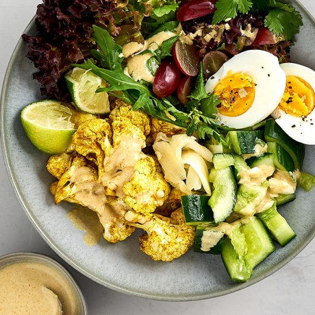

BOWL

ROASTED CAULIFLOWER BOWL
Fast made healthy bowl which is also great for lunch the next day.
Full of taste and different flavours.
INGREDIENTS
- Cauliflower
- Grapes
- Wild herbs salad
- Cucumber
- Eggs
- Garlic
- Olive oil
- White balsamico vinegar
- Salt & Pepper
STEPS
- Preheat the oven to 200 degree celsius.
- Chop the cauliflower in little roses. Mix wih curry powder and olive oil. When the oven is hot put it in until golden brown
- Squeeze the cucumber until it cracks. Cut the cucumber in little pieces and mix with vinegar, garlic and season with salt.
- Cut the grapes in half and set aside.
- Wash and clean the salad. Mix the salad with 2 tspn of olive oil and 1 tspn of vingar. Mix and add a bit of salt.
- Cook the eggs for about 7 minutes. Cool them down with cold water once they're done.
- Put the cauliflower out of the oven and set the plate along with the rest of the ingredients.
- Pour a bit of olive oil over the bowl and season with salt and pepper.